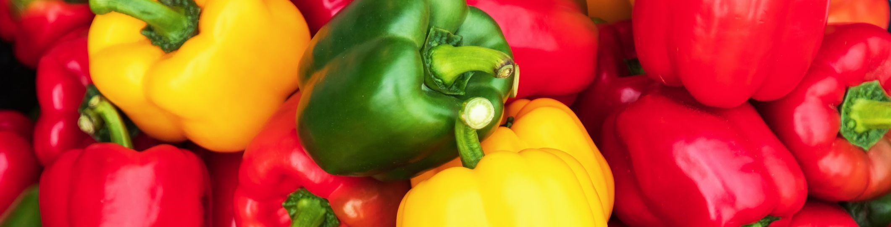
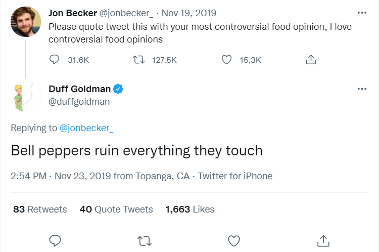

Bell Peppers are Disgusting
Throughout my entire life, there's only one food that I countinued to despise. But what thing could be so repulsive, so horribly disgusting, that I could hate it so passionately? That food, is bell peppers (insert horrified screaming).
1. The Texture
The texture can be tolerable when specific conditions are met, but it still isn't enjoyable. Bell peppers are unnecessarily thick, which is not good because of their taste (I'll get into that later). Even when cooked, these things are way to thick, and it gets in the way of other good foods. Bell peppers also feel dry, and yet wet at the same time, which makes the whole experience extremely uncomfortable. The skin of the pepper is not only thick, but hard, which makes it almost painful to eat. Finally, the seeds. The seeds are an annoyance that I have with most peppers, but bell pepper seeds aren't soft like those other ones, and they don't provide anything anyway, like spice or a fun texture.
2. The Taste
The taste is the worst part of this disgusting fruit (yes, peppers are technically fruit). They're mostly bland, but the only flavor they have is very... earthy. And not in a good way. Bell peppers taste like dirt, and not in a metaphorical way, literal dirt. Maybe they're a little sweeter than normal dirt, but dirt is dirt, and it's gross. It's really sad how when these things are put in any dish and you get a bite of them, instead of getting a fun, zany taste, you get this overwhelming earthiness, ruining the whole dish. Most peppers make up for any dirt-like qualities with a delicious yet natural spice that you can get nowhere else. And trust me, where I live spice is like a big part of our dishes. The bell pepper is a disgrace to pepper-kind.
3. The Look
Not much to say look-wise. Bell peppers look like the shriveled nutsack of an ogre. That's it.
If you don't wanna take it from me, then here's a tweet by proffesional pastry chef Duff Goldman. If you don't take it from Duff, then you can't take it from anyone.

Longer blogs coming in the future (I'm probably working on something cool.)